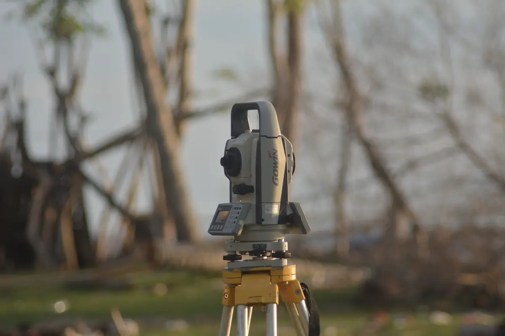
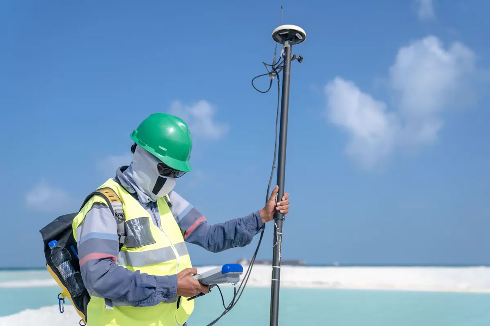
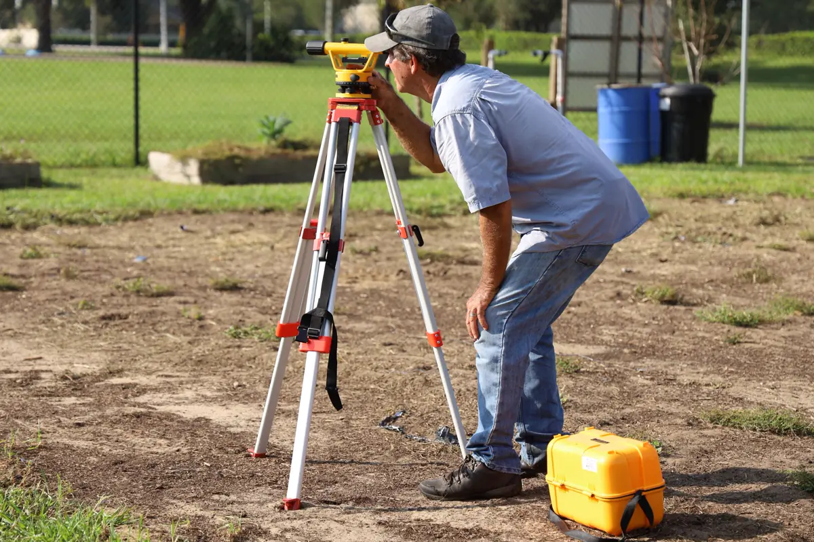

Para que serve o levantamento topográfico
Quase toda obra e toda regularização começa pela mesma pergunta: o terreno é exatamente como está na escritura? Em boa parte dos lotes da Grande Vitória a resposta é não — muro fora da divisa, área real diferente da matrícula, desnível que ninguém mediu. O levantamento topográfico responde com coordenadas, cotas e medidas, e é a base do projeto estrutural, do projeto de fundação e do processo na prefeitura.
O serviço segue a ABNT NBR 13133 e sai com responsável técnico e ART. Esta página trata do levantamento do terreno. Para a documentação do imóvel construído, veja regularização de imóvel e habite-se.
Equipe técnica pronta para atender toda a demanda em Vitória, Vila Velha, Serra, Cariacica e região: o orçamento, o agendamento e o acompanhamento ficam centralizados na Axial Engenharia, do primeiro contato à entrega do documento.

Tipos de levantamento
Planialtimétrico
Divisas, edificações existentes, árvores, postes, meio-fio e curvas de nível. É o levantamento pedido para projeto de casa, galpão e prédio, para cálculo de corte e aterro e para o projeto de drenagem. Em terreno de encosta — comum em Vitória, Cariacica e na Serra — o desnível medido muda o custo da fundação e da contenção.
Cadastral e de divisas
Medição das divisas físicas e confronto com a matrícula: confrontantes, ângulos, área real e diferença em relação ao registro. É o documento que resolve dúvida de muro, de invasão de lote e de compra de imóvel com medida incerta.
Para desmembramento, remembramento e retificação
Dividir um lote, juntar dois ou corrigir a área no cartório exige planta e memorial descritivo assinados por profissional habilitado, no formato que a prefeitura e o registro de imóveis pedem. O levantamento já sai pensado para esse uso.
Usucapião e georreferenciamento rural
A usucapião, judicial ou em cartório, pede planta e memorial descritivo com ART. Para imóvel rural, o georreferenciamento previsto na Lei 10.267/2001 é feito por profissional credenciado no INCRA e certificado no SIGEF — exigência para desmembrar, vender ou transferir a maior parte das áreas rurais.

O que você recebe
| Entrega | Formato | Para que serve |
|---|---|---|
| Planta topográfica | DWG e PDF | Base do projeto e do processo na prefeitura |
| Memorial descritivo | PDF assinado | Cartório, desmembramento, usucapião |
| Curvas de nível e cotas | Na planta | Corte, aterro, drenagem e fundação |
| Quadro de áreas | Na planta | Comparar área real com a matrícula |
| ART | CREA-ES | Responsabilidade técnica pelo levantamento |

Topografia antes da obra evita o erro mais caro
Galpão locado fora do lote, piso com caimento para o lado errado e fundação calculada para um desnível que não existe são problemas que aparecem quando a obra já começou. Com o levantamento em mãos, a sondagem do solo é marcada nos pontos certos e a obra do galpão é locada sobre coordenadas, não sobre o muro do vizinho.
Na regularização, o levantamento também é o ponto de partida: em Cariacica, por exemplo, a Lei 6.635/2024 pede ART do levantamento topográfico quando ele for necessário ao processo.
Perguntas frequentes sobre levantamento topográfico
Qual a diferença entre levantamento planimétrico e planialtimétrico?
O planimétrico mede só a posição em planta: divisas, construções e área. O planialtimétrico mede também a altura de cada ponto, gerando curvas de nível e cotas. Para projeto de obra quase sempre é o planialtimétrico que se pede.
Preciso de topografia para aprovar projeto na prefeitura?
Na maioria dos casos, sim. A planta de situação e o projeto precisam mostrar o terreno real, e divergência entre a área medida e a da matrícula costuma travar o processo até ser explicada ou retificada.
Quanto tempo leva um levantamento topográfico?
Um lote urbano comum é medido em meio dia de campo, e a planta sai em poucos dias úteis. Área grande, terreno com mata ou georreferenciamento rural levam mais, e o prazo é informado no orçamento.
Topografia serve para usucapião?
Serve e é obrigatória: a usucapião, judicial ou extrajudicial, exige planta e memorial descritivo do imóvel assinados por profissional habilitado, com ART.
O que é georreferenciamento?
É o levantamento das divisas de imóvel rural com coordenadas no sistema geodésico oficial, feito por profissional credenciado no INCRA e certificado no SIGEF. É exigido para desmembrar, vender ou transferir a maior parte dos imóveis rurais.
Topografia na Grande Vitória
Levantamento topográfico para projeto, regularização e cartório:
Vai projetar, dividir ou regularizar o terreno?
Mande a localização, a matrícula ou a escritura e o motivo do levantamento. Retornamos com escopo, prazo e valor.